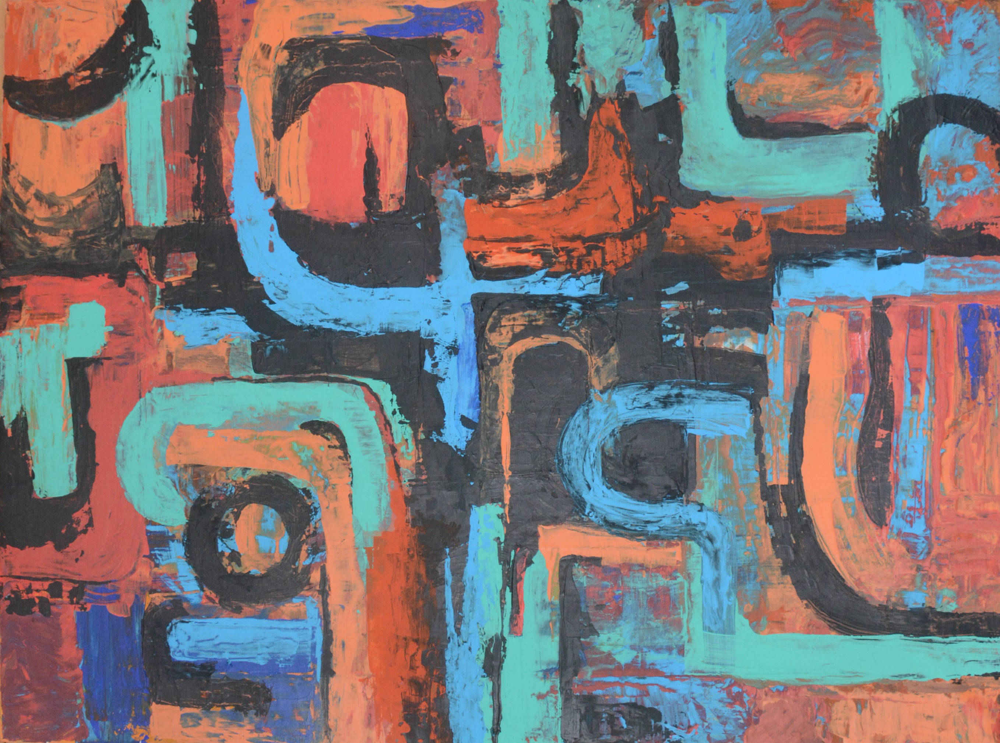
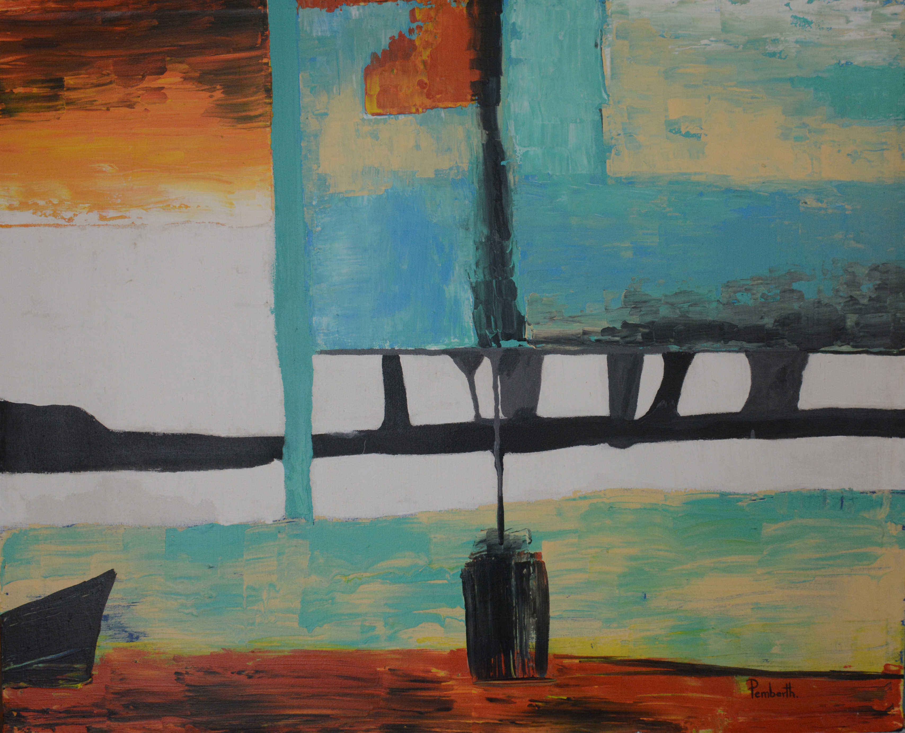
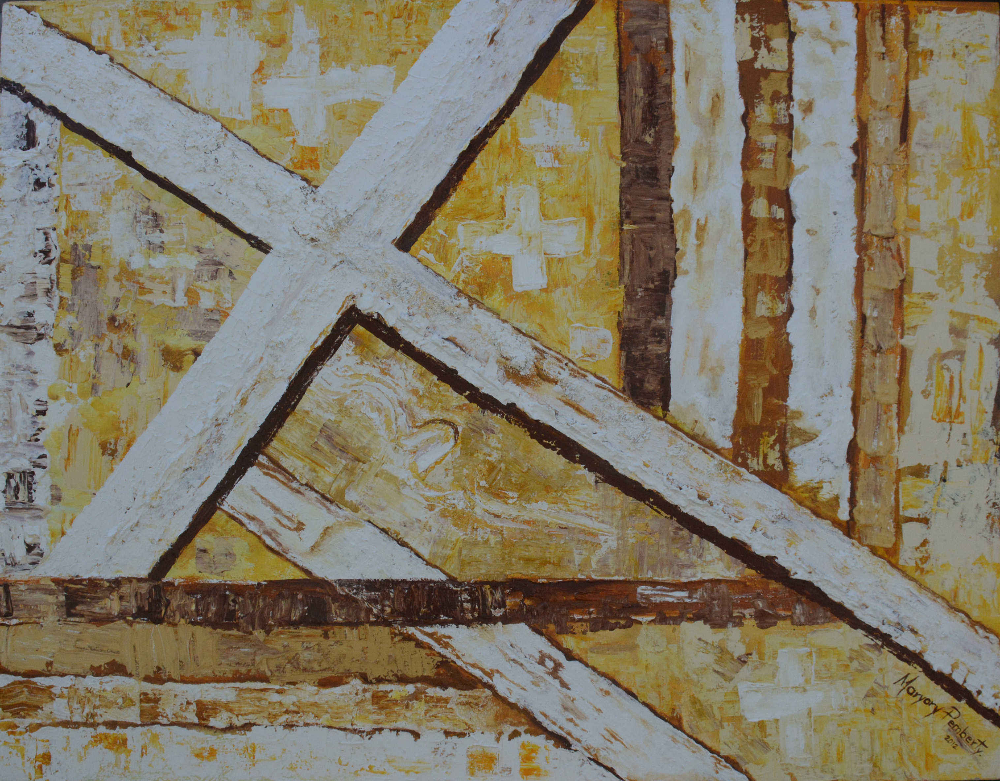

SUEÑO DE CRISTAL 1 - Acrílico sobre vidrio 100x80 cm.

SUEÑOS DE CRISTAL 2 - Acrílico sobre vidrio 100c80 cm

INFRA 1 - Acrílico sobre madera. 120 x140
INFRA 2 - Acrílico sobre madera 140x160
OJO INTERNO - Acrilico sobre madera. 1.70x170
BALANZA ESPIRITUAL - Acrilico sobre madera. 1.80x1.20
CONFLICTO INTERNO - Acrilico sobre linzo. 120x100

MELODÍA INTERNA - Acrilico sobre lienzo. 120x100
ARRIBA Y ABAJO - Acrílico sobre lienzo 82x82cm.

PUERTAS - Acrílico sobre lienzo 81x62cm.

EQUILIBRIO - Acrílico sobre lienzo 90x74cm.
GEOMETRÍA INTERIOR - Acrílico sobre lienzo 90x74cm.
SILENCIO - Acrílico sobre lienzo 90x74cm.

ILUSION - Acrílico sobre lienzo 90x74cm.
ENIGMA - Acrílico sobre lienzo 90x74cm.
SUEÑOS - Acrílico sobre lienzo 90x74cm.
ARCOS - Acrílico sobre lienzo 90x74cm.
INSPIRACIÓN MAYA - Acrílico sobre lienzo 90x74cm.

REFLEJO NATURAL - Acrílico sobre madera 160.5x140cm.
NATURALEZA - Acrílico sobre madera 160x130cm.
LUZ Y SOMBRA - Acrílico sobre madera 169x110cm.
CAMINOS - Acrílico sobre madera 160x123cm.

CRUCES - Acrílico sobre madera 137x74cm.
UNO SOLO - Acrílico sobre madera 100x80cm.
EXPLOSIÓN - Acrílico sobre madera 102x61cm.
PREJUICIOS - Acrílico sobre madera 95x67cm.
CIUDAD DEL COLOR - Óleo sobre lienzo 146x114cm.
BRECHAS - Acrílico sobre madera 83x63cm.
EL PUENTE - Acrílico sobre madera 160x160cm.


{kind=link}
{kind=link}
{kind=link}
{kind=link}
{kind=link}
{kind=link}
{kind=link}
{kind=link}
{kind=link}
{kind=link}
{kind=link}
{kind=link}
{kind=link}
{kind=link}
{kind=link}
{kind=link}
{kind=link}
{kind=link}
{kind=link}
{kind=link}
{kind=link}
{kind=link}
{kind=link}
{kind=link}